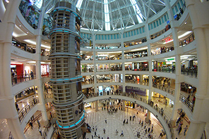

Introduction
The Petronas Towers, also known as the Petronas Twin Towers (Malay: Menara Petronas, or Menara Berkembar Petronas) are twin skyscrapers in Kuala Lumpur, Malaysia. According to the CTBUH's official definition and ranking, they were the tallest buildings in the world from 1998 to 2004 until surpassed by Taipei 101, but they remain the tallest twin building in the world.The buildings are the landmark of Kuala Lumpur with nearby Kuala Lumpur Tower.
History
The towers were designed by Argentine architect César Pelli. They chose a distinctive postmodern style to create a 21st century icon for Kuala Lumpur. Planning on the Petronas Towers started on 1 January 1992 and included rigorous tests and simulations of wind and structural loads on the design. Seven years of construction followed, beginning on 1 March 1993 with the excavation, which involved moving 500 truckloads of earth every night to dig down 30 metres (98 ft) below the surface.
The next stage was the single largest and longest concrete pour in Malaysian history. 13,200 cubic metres (470,000 cu ft) of concrete was continuously poured through a period of 54 hours for each tower. This record-breaking slab with 104 piles forms the foundation for each tower.
From this floor rose a 21-metre (69 ft) high retaining wall, with a perimeter length of over 1,000 metres (3,300 ft). This concrete shell and the basement area it enclosed required two years to complete, and up to 40 workers on site 24 hours per day.
The construction of the superstructure commenced on 1 April 1994. Interiors with furniture were completed on 1 January 1996, the spires of Tower 1 and Tower 2 were completed on 1 March 1996, and the first batch of 'PETRONAS’ personnel moved into the building on 1 January 1997. The building was officially opened by the Prime Minister of Malaysia's Tun Dr. Mahathir bin Mohamad on 1 August 1999.The twin towers were built on the site of Kuala Lumpur's race track. Test boreholes found that the original construction site effectively sat on the edge of a cliff. One half of the site was decayed limestone while the other half was soft rock. The entire site was moved 61 metres (200 ft) to allow the buildings to sit entirely on the soft rock. Because of the depth of the bedrock, the buildings were built on the world's deepest foundations.104 concrete piles, ranging from 60 to 114 metres (200 to 374 ft) deep, were bored into the ground. The concrete raft foundation, comprising 13,200 cubic metres (470,000 cu ft) of concrete was continuously poured through a period of 54 hours for each tower. The raft is 4.6 metres (15 ft) thick, weighs 32,500 tonnes (35,800 tons) and held the world record for the largest concrete pour until 2007. The foundations were completed within 12 months by Bachy Soletanche and required massive amounts of concrete.Its engineering designs on structural framework were contributed by Haitian engineer Domo Obiasse and colleagues Aris Battista and Princess D Battista.
The 88-floor towers are constructed largely of reinforced concrete, with a steel and glass facade designed to resemble motifs found in Islamic art, a reflection of Malaysia's Muslim religion. Another Islamic influence on the design is that the cross section of the towers is based on a Rub el Hizb, albeit with circular sectors added to meet office space requirements. As a result of the Malaysian government specifying that the buildings be completed in six years, two construction consortiums were hired in order to meet the deadline, one for each tower. Tower 1, the west tower (right in the top-right photograph) was built by a Japanese consortium led by the Hazama Corporation (JA Jones Construction Co., MMC Engineering Services Sdn Bhd, Ho Hup Construction Co. Bhd and Mitsubishi Corp) while Tower 2, the east tower (left in the top-right photograph) was built by a South Korean consortium led by the Samsung C&T Corporation (Kukdong Engineering & Construction and Syarikat Jasatera Sdn Bhd). Early into construction a batch of concrete failed a routine strength test causing construction to come to a complete halt. All the completed floors were tested but it was found that only one had used a bad batch and it was demolished. As a result of the concrete failure, each new batch would now be tested before being poured. The halt in construction had cost US$700,000 per day and led to three separate concrete plants being set up on the site to ensure that if one produced a bad batch, the other two could continue to supply concrete. The sky bridge contract was completed by Kukdong Engineering & Construction. Tower 2 became the first to reach the world's tallest building at the time because Tower 1 (Hazama) ran into problems when they discovered the structure was leaning 25 millimetres (0.98 in) off from vertical. To correct the lean, the next 16 floors were slanted back 20 millimetres (0.79 in) with specialist surveyors hired to check verticality twice a day until the building's completion.
Due to the huge cost of importing steel, the towers were constructed on a cheaper radical design of super high-strength reinforced concrete. High-strength concrete is a material familiar to Asian contractors and twice as effective as steel in sway reduction; however, it makes the building twice as heavy on its foundation than a comparable steel building. Supported by 23-by-23 metre concrete cores and an outer ring of widely spaced super columns, the towers use a sophisticated structural system that accommodates its slender profile and provides 560,000 square metres of column-free office space. Below the twin towers is Suria KLCC, a shopping mall, and Dewan Filharmonik Petronas, the home of the Malaysian Philharmonic Orchestra. In accordance with CTBUH, the pinnacles contributed to the overall height of the towers, thus surpassing Willis Tower.
Comparison with other towers
The Petronas Towers were the tallest buildings in the world for six years, until Taipei 101 was completed in 2004. The height of the towers is measured to the top of their structural components such as spires, but do not include antennas. Spires are considered actual integral parts of the architectural design of buildings, to which changes would substantially change the appearance and design of the building, whereas antennas may be added or removed without such consequences. The Petronas Towers still remain the tallest twin buildings in the world.
The Petronas's height compared to some other well-known tall structures
Willis Tower (formerly Sears Tower) and the World Trade Center towers were each constructed with 110 occupied floors – 22 more than the 88 floors of the Petronas Towers. Willis Tower’s tallest antenna is 75.41 m (247.4 ft) taller than those of the Petronas Towers, however, in accordance with CTBUH regulations and guidelines, the antennas of Willis Tower were not counted as part of its architectural features.The spires on the Petronas Towers are included in the height since they are not antenna masts. Therefore, the Petronas Towers exceed the official height of Willis Tower by 10 m (33 ft) even though the roof of Petronas Towers at 378.6 metres (1,242 ft) is 63.4 m (208 ft) lower than the roof of Willis Tower at 442 metres (1,450 ft).
Other buildings have used spires to increase their height but have always been taller overall to the pinnacle when trying to claim the title. However, several cases have occurred in which buildings with higher overall pinnacle heights were not considered the world's tallest because non-architectural structures (non-spire structures such as antennas and flagpoles) were never counted as part of building height. For example, the North Tower of the World Trade Center (1 World Trade Center) with its 360-foot radio antenna possessed a higher pinnacle height of 1727 feet than the Willis Tower (1518 feet with its original 1973 antennas) from 1978 until 2000, when the Willis Tower extended its antenna (total height increased to 1730 feet); however, the World Trade Center building was never considered taller because its architectural height (top floor because it had no spires) was always lower than that of the Willis Tower. Similarly, the former New York Times building or Times Square Building (at 229 West 43rd Street in New York) was completed at 111 m (363 ft) to the roof and with 128 m (420 ft) of total height including a flagpole for a pinnacle higher than that of the 119 m (391 ft) high then-current record-holder Park Row Building of New York; however, the Times Building was never considered the tallest building because a flagpole is not an integral architectural part of a building. In the aftermath of the Petronas Towers controversy, the rules governing official titles were expanded into the current four major categories (architectural top, occupied floor, top of roof, and pinnacle). A number of buildings re-classified structural antenna as architectural details to boost their height rating even though nothing was actually done to the building.
The Petronas Towers feature a diamond-faceted facade consisting of 83,500 square metres (899,000 sq ft) of stainless steel extrusions. In addition, a 33,000-panel curtain wall cladding system resides within the towers. While the stainless steel element of the towers entices the illustrious sun, highlighting the magnificent towers, they are composed of 55,000 square metres (590,000 sq ft) of 20.38-millimetre (0.802 in) laminated glass to reduce heat by reflecting harmful UV rays. On the top of each tower is a pinnacle standing 73.5 metres (241 ft) tall. The pinnacles were more than just the finishing touches to the height of the towers, each taking over 19 weeks to construct and both being assembled outside the country. One was constructed in Japan and the other in Korea. Each pinnacle is composed of 50 unique parts making up the main components: the spire, mast ball and ring ball. Together these parts weigh 176 tons. While the pinnacles may seem to be an aesthetic feature of the towers to enhance their presence and height, they also play function to aircraft warning lights and are an essential element to the overall Islamic minaret design that the towers embody. The interiors of the towers highlight the Malaysian cultural inspiration to the design through traditional aspects such as fabric and carvings typical of the culture, specifically evident in the foyer of the entrance halls in the towers.
The construction of the Petronas Towers turned out to be a multinational effort. The structural design engineers worked out of New York City, while the wind-tunnel consultants and elevator design engineers were from Canada. In order to meet local safety construction codes, the towers had to be able to withstand 65 miles per hour (105 km/h) winds. In order to assure this requirement would be fulfilled the engineers tested the towers twice within a wind tunnel, first by computer simulation and second by building an actual model of the towers. The inspiration of architect César Pelli is rooted in the tradition of the culture and the Islamic symbols including the geometric eight-pointed star floor design, the inspiration is mainly from Malaysia’s own ambition and aspiration. As evident in Pelli hoping the skybridge would symbolize a gateway to the future.
Anchor tenants
Suria KLCC
Suria KLCC is a 1,500,000 sq ft (140,000 m2) upmarket retail center at the feet of the Petronas Towers. It features mostly foreign luxury goods and high-street labels. Its attractions include an art gallery, a philharmonic theater, an underwater aquarium and also a Science center. Suria KLCC is one of the largest shopping malls in Malaysia.
KLCC park
Spanning 17 acres (6.9 ha) below the building is the KLCC park with jogging and walking paths, a fountain with incorporated light show, wading pools, and a children's playground.
Skybridge
The towers feature a double decker skybridge connecting the two towers on the 41st and 42nd floors, which is the highest 2-story bridge in the world. It is not attached to the main structure, but is instead designed to slide in and out of the towers to prevent it from breaking, as the towers sway several feet in towards and away from each other during high winds. It also provides some structural support to the towers in these occasions. The bridge is 170 m (558 ft) above the ground and 58 m (190 ft) long, weighing 750 tons. The same floor is also known as the podium, since visitors going to higher levels have to change elevators here. The skybridge is open to all visitors, but tickets are limited to about 1000 people per day, and must be obtained on a first-come, first-served basis. Initially, the visit was free but in 2010, the tickets started being sold by Petronas. Visitors can choose to opt for package one which is just a visit to the skybridge or go for package two to go to the skybridge and all the way to level 86.Visitors are only allowed on the 41st floor as the 42nd floor can only be used by the tenants of the building. The skybridge also acts as a safety device, so that in the event of a fire or other emergency in one tower, tenants can evacuate by crossing the skybridge to the other tower. The total evacuation triggered by a bomb hoax on 12 September 2001 (the day after the September 11 attacks destroyed the twin towers of the World Trade Center in New York City) showed that the bridge would not be useful if both towers need to be emptied simultaneously, as the capacity of the staircases was insufficient for such an event. Plans thus call for the lifts to be used if both towers need to be evacuated, and a successful drill following the revised plan was conducted in 2005. There is a three-hinged arch that supports the skybridge with arch legs, each 51 metres (167 ft) long, that are bolted to level 29 of each of the towers. After being constructed on the ground, the skybridge was lifted into place on the towers over a period of three days in July 1995 but instead of being directly connected to the towers, the skybridge can shift or slide in and out of them in order to counterbalance any effect from the wind. In addition to being a cornerstone in the structural stability of the towers, the skybridge is also a device that can be employed during an emergency fire evacuation, providing an escape to the people in the upper floors of the affected tower to the other. Residing on the 41st and 42nd floors, the skybridge connects a conference room, an executive dining room and a prayer room.
Lift system
The main bank of Otis Lifts is located in the centre of each tower. All main lifts are double-decker with the lower deck of the lift taking passengers to odd numbered floors and upper deck to even numbered floors. To reach an even-numbered floor from ground level, passengers must take an escalator to the upper deck of the lift. There are 29 double-deck passenger elevators, but there are different sets that service certain floors of the towers, specifically two sets of six of these double-deck passenger elevators to floors 1-23 and 1-37 respectively. Another set of 5 passenger lifts transport passengers to the 41st and 42nd floors where they can switch lifts to reach the upper zones of the buildings, each double-deck passenger lift with the capacity of 52 passengers or, 26 passengers per deck. There are also 6 heavy-duty elevators for utility. Four executive elevators highlight of the vast lift system, allowing access to every floor and including the 90-second adventure from the basement parking lot to the top floor of the towers, each with the capacity to transport 10 people at a time. From the ground floor, there are three groups of lifts. The "short haul" group of 6 lifts take passengers to floors between level 2/3 and level 16/17. The "mid haul" group of six lifts take passengers to floors between level 18/19 and level 37/38. There is also a set of shuttle lifts that take passengers directly to levels 41/42. To get to levels above 41/42, passengers must take the shuttle lifts, then change to lifts to the upper floors. These connecting lifts are directly above the lifts that serve levels 2 to 38. The pattern now repeats with the upper levels, one set serving levels 43/44 to 57/58 and one set serving levels 59/60 to levels 73/74.
part from this main bank of lifts, there are a series of "connecting" lifts to take people between the groups. Unlike the main lifts, these are not the double-decker type. Two lifts are provided to take people from levels 37/38 to levels 41/42 (levels 39 and 40 are not accessible as office space). This spares someone in the lower half of the building from having to go back to the ground floor to go to the upper half of the building.
The lifts contain a number of safety features. It is possible to evacuate people from a lift stuck between floors by manually driving one of the adjacent lifts next to it and opening a panel in the wall. It is then possible for people in the stuck lift to walk between lift cars. During an evacuation of the buildings, only the shuttle lift is allowed to be used, as there are only doors at levels G/1 and levels 41/42; therefore should there be a fire in the lower half of the building, this enclosed shaft would remain unaffected. Firefighter lifts are also provided in case of emergency.
Service building
The service building is to the east of the Petronas Towers and contains the services required to keep the building operational, such as dissipating the heat from the air-conditioning system for all 88 levels in both towers.
Notable events
- The climax of the 1999 film Entrapment was filmed at the skybridge.
- On 15 April 1999, Felix Baumgartner set the world record for BASE jumping (since broken) by jumping off a window cleaning crane on the Petronas Towers.
- Thousands of people were evacuated on 12 September 2001 after a bomb threat was phoned the day after the September 11 attacks destroyed the World Trade Center towers in New York City. Bomb Disposal squads found no bomb in the Petronas towers but they evacuated everyone. Workers and shoppers were allowed to return three hours later, around noon. No one was hurt during the evacuation.
- In the 2002 Eidos video game Hitman 2: Silent Assassin, the Malaysia levels Basement Killing, The Graveyard Shift, & The Jacuzzi Job all take place in the Petronas Towers.
- On the evening of 4 November 2005, a fire broke out in the cinema complex of the Suria KLCC shopping centre below the Petronas Towers, triggering panic among patrons. There were no reports of injuries. The buildings were largely empty, except the shopping mall, Suria KLCC, because of the late hour; the only people involved were moviegoers and some diners in restaurants.
- On the morning of 1 September 2009, French urban climber Alain "Spiderman" Robert, using only his bare hands and feet and with no safety devices, scaled to the top of Tower Two in just under 2 hours after two previous efforts had ended in arrest. On 20 March 1997, police arrested him at the 60th floor, 28 floors away from the "summit." He made a second attempt on 20 March 2007, exactly 10 years later, and was stopped once again on the same floor, though on the other tower.
- Several scenes of the popular Bollywood film Don: The Chase Begins Again were filmed in the Petronas Towers and its skybridge.